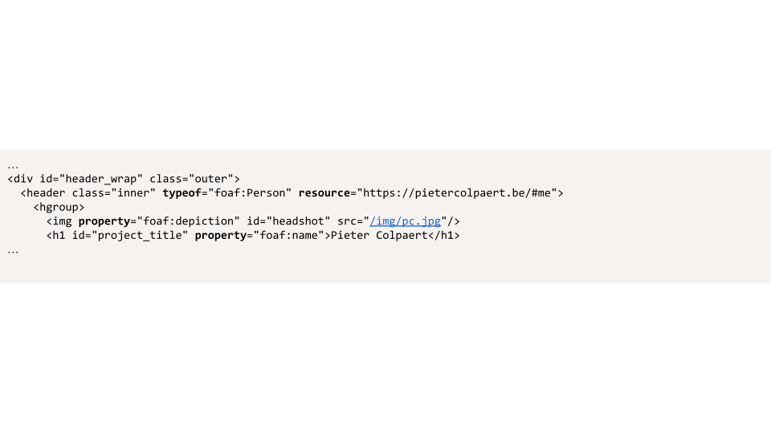

Linked Data in its essence
-
Triples represent statements
-
Web addresses (IRIs, URIs) as global identifiers
-
= The Resource Fescription Framework (RDF)
Simple tasks should be simple,
complex tasks should be manageable.
People think RDF is a pain
because it is complicated.
The truth is even worse.
RDF is painfully simplistic,
but it allows you to work with real-world data
and problems that are horribly complicated.
Dan Brickley & Libby Miller
Today
-
We look at how to query Linked Data on the Web
-
And how you can participate by making your data available for querying as well!
Data on the Web
-
Data makes sense in the context of its retrieval
- https://photoplatform.com/images/APIs/meta?imageid=191391932141.jpg
-
APIs carry the context of the data
-
this metadata is tied to the image at
https://photoplatform.com/images/APIs/image?imageid=191391932141.jpg
- Integration requires high effort
Tight coupling between applications and data
Linked Data on the Web
-
Linked Data can include its own context
-
A
foaf:name property describes the name of something.
-
Linked Data can be provided in many formats
-
An RDF document represents a data graph.
-
Through this data graph, we can convert between formats.
it can be a turtle serialization

it can be a json-ld serialization

it can be embedded in a Web page as a script

or it can be embedded directly into the HTML as RDFa

Different data publishing strategies
We can dump all dataset triples
in one or more archive files.
A data dump places all dataset triples
in one or more archive files.
-
Dumps need to be downloaded entirely
before they can be queried.
- Dump files can be several gigabytes.
-
They offer the client full flexibility
to choose how data is processed.
-
Keeping data up-to date requires effort.
- redownload the entire dump
- download and apply incremental patches
We can provide the clients with a queryable interface.
A SPARQL endpoint lets clients evaluate
arbitrary (read-only) queries on a server.
-
This gives clients direct access to
(only) the data they are interested in.
- Only very little bandwidth is required.
-
Data is always up-to-date.
-
The per-request cost for SPARQL endpoints
is much higher than for other HTTP servers.
- Few servers allow arbitrarily complicated queries.
Possible Linked Data interfaces exist
in between the two extremes.
Linked Data documents provide
per-topic access to a dataset.
Linked Data documents provide
per-topic access to a dataset.
-
They follow the Linked Data principles.
- The information structure resembles typical webpages.
-
Browsing up-to-date datasets is straightforward.
-
Query evaluation is possible through
link-traversal-based querying.
-
The evaluation of SPARQL queries is rather slow.
-
Completeness cannot always be guaranteed.
Linked Data Platform provides a
file-system like interface
Can we make our query interface more lightweight?
-
What if we allow the user only to ask specific lightweight queries?
Triple Pattern Fragments are lightweight,
because they do not require a triple store.
-
The interface can be realized with many back-ends.
- A SPARQL endpoint could serve as back-end.
-
Since queries are relatively simple,
a less expensive data infrastructure is sufficient.
These interfaces are not the final answer.
-
There’s no silver bullet.
Publication and querying always involves trade-offs.
-
For a scalable Web, we require simple servers
that enable smart clients to efficiently query data.
-
By publishing data over such simple interfaces,
we can enable high reuse for specific usecases!
- A knowledge graph querying framework
- Querying over heterogeneous interfaces
- Goal: executing SPARQL queries over one or more interfaces
-
Comunica supports federated querying evaluation.
-
By providing multiple data sources
the Comunica engine can evaluate queries
over the combined knowledge graphs of these data sources.
-
Comunica supports query evaluation with link traversal
-
By following the links available in the discovered data
we can query data spaces of which we only know a single entry.
-
SPARQL is a query language.
- Select specific data from an RDF dataset.
- Insert, change, or delete data in an RDF dataset.
-
The SPARQL protocol
is a Web API definition
for querying in the SPARQL language over HTTP.
-
A SPARQL endpoint executes SPARQL queries sent by clients
through HTTP, and replies with their results.
-
A BGP is a set of triple patterns.
- Their syntax is a superset of Turtle.
-
A triple pattern
is a triple in which
each of the components can be a variable.
- Variables start with a question mark (
?name).
-
A SPARQL query engine finds solution mappings.
-
Variables and blank nodes are mapped to IRIs,
blank nodes, or literals according to dataset triples.
This query finds artists
influenced by Picasso.
SELECT ?name ?person WHERE {
?person a dbo:Artist.
?person foaf:name ?name.
?person dbo:influencedBy dbr:Pablo_Picasso.
}
A query engine will try to find mappings
such that the entire BGP is satisfied.
When the mappings are substituted in the BGP,
the dataset should contain triples as follows:
?person a dbo:Artist.?person foaf:name ?name.?person dbo:influencedBy dbr:Pablo_Picasso.
Evaluating this query against DBpedia
returns possible mappings.
A CONSTRUCT query
returns matching triples.
An ASK query returns a boolean stating
whether the pattern exists in the dataset.
A DESCRIBE query returns (non-specified)
contextual information for resources.
In addition to only BGPs,
SPARQL queries can contain modifiers.
LIMIT- only return the first n results
OPTIONAL- specifies a left join
FILTER- selects based on an expression
ORDER BY- sorts results based on an expression
- …
- …
In addition to only BGPs,
SPARQL queries can contain modifiers.
In addition to only BGPs,
SPARQL queries can contain aggregations.
GROUP BY- groups bindings so aggregate functions can be used over the groups
HAVING- selects based on an expression on groups
In addition to only BGPs,
SPARQL queries can contain aggregations.
The purpose of the SPARQL protocol
is sending queries and receiving results.
-
The server is typically an RDF database (triplestore)
with a SPARQL query engine.
-
The client sends a query using a URI template.
-
In essence,
/sparql?query={query} with
a URL-encoded SPARQL query through GET or POST.
-
The server replies in a standardized format.
Data Publishing takeaways
-
There’s no silver bullet.
Choose the trade-offs that best fit your use-case.
-
Take advantage of re-use of data.
Your interface does not have to provide for the whole world.
-
Remember the 5 stars of Open Data.
Data Querying Takeaways
-
Query interfaces do not necessarily need
to be equal to server APIs.
-
Comunica enables you to query data over heterogeneous interfaces using SPARQL.
-
Comunica can use Link Traversal to query decentralized environments.